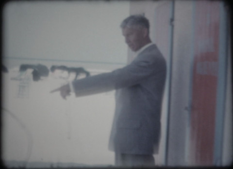

{kind=link}
Felix Kruis

Felix Kruis * 1984. Aufgewachsen bei Köln und
Ambach am Starnberger See. Studium der Theaterwissenschaft. Aktuell
Studium an der Akademie der Bildenden Künste München bei Stephan
Huber. Diverse Projekte in der freien Theaterszene Münchens.
www.felixkruis.com
Ausstellungen (u.a.): Spiegelsaal, Berlin 2012 – 1. Platz, Kurzfilmwettbewerb Bayreuther Dialoge 2012 – Haus der kleinen Künste, München 2014 – Kunstpavillon, München 2016 – Preis des Akademievereins Jahresausstellung 2016
Opapa (Auf der Jagd, Der letzte Zug, Roboter)
2015 – Video, Sound – Auf der Jagd 1'12'' – Der letzte Zug
1'13'' – Roboter 1'
Konzept: Felix Kruis – Material: Super8, Magnetton
Materialien aus den 1950er und 60er Jahren, die der Großvater des Künstlers aufgenommen hat, werden in einer Collage neu zusammengeführt. Im Zentrum steht das großväterliche Zutun im Zweiten Weltkrieg, das für den Künstler immer ein düsteres, mythisches Rätsel blieb. Die Video-/Toncollage interpretiert die wenigen Informationen über den Großvater ; die Trickfilmanteile sind der Kommentar des Künstlers. Abgerundet wird das Triptychon durch eine videografische Skizze. Weitere Kurzvideos in diesem Kontext sind geplant.